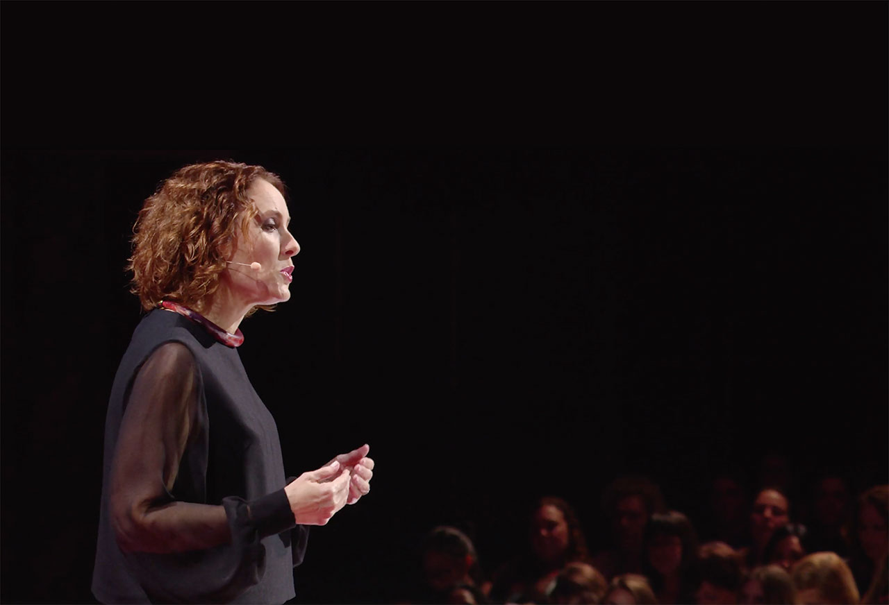
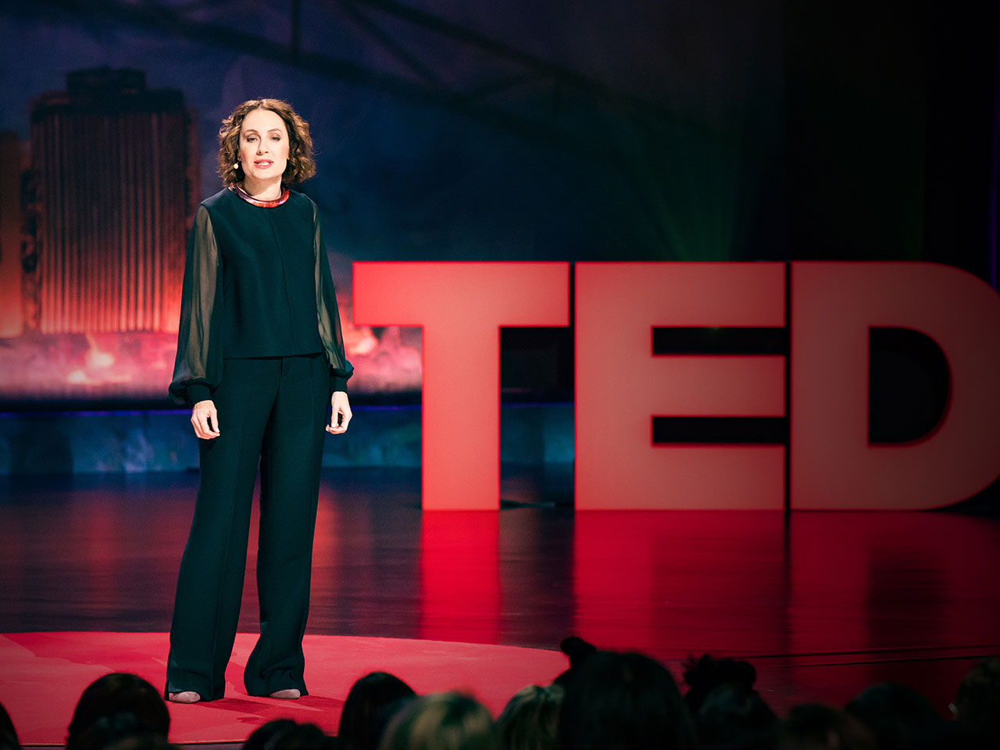

글. 편집실
출처. TED Talk
하버드 의과대학 심리학자 수전 데이비드. 그녀의 TED 강연 ‘감정적 용기의 선물과 힘’은 공개 일주일 만에 100만 뷰를 넘어섰고, 현재 1,100만 뷰 이상을 기록하며 전 세계 사람들의 공감을 얻고 있다. 남아프리카공화국 출신인 그녀는 15세에 아버지를 암으로 잃은 후 깊은 슬픔에 빠졌다. 주변 사람들은 “괜찮니?”, “긍정적으로 생각해”라고 말했지만, 이는 오히려 그녀의 감정을 무시하는 것처럼 느껴졌다. “항상 긍정적이어야 한다는 압박은 우리의 인간성을 억압합니다.” 긍정심리학자가 오히려 지나친 긍정의 위험성을 경고하는 이유는 무엇일까.

아버지가 돌아가신 후 학교로 돌아갔을 때, 그녀의 반 친구들은 몇 달 동안
아버지 이야기를 피했다. “어떻게 지내니?”라고 묻는 사람들에게
“괜찮아요”라고 답했고, 성적도 떨어뜨리지 않은 그녀는 ‘강하다’는 칭찬을
받았다. 마치 세상이 그녀의 '긍정적인 태도'를 진짜 회복과 동일시하는 것
같았다. 하지만 실제로는 15살 소녀가 아버지를 잃고 슬퍼하고 있었을
뿐이다. 그녀는 폭식증에 시달렸다.
이렇듯 감정 다루기에 능숙하지 못했던 그녀는 선생님의 권유로 일기장을
쓰면서 전환점을 맞이했다. 8학년 때 영어 선생님이 빈 공책을 나눠주며
말했다. “써봐. 진실을 말해. 아무도 읽지 않는다고 생각하고 써.” 이
단순한 초대가 혁명이었다. 선생님은 “긍정적으로 생각해”, “모든 사람은
긍정적이어야 해”, “좋은 기운만 가져야 해”라고 말하는 대신, “나는 너를
본다. 그게 네 진짜 감정이 아니라는 걸 안다”고 말하는 것 같았다. 매일
일기를 쓰고 제출하면, 선생님은 연필로 답을 써주었다. 학생의 펜이
주인공이 되도록, 선생님의 연필은 조용히 곁을 지켰다. 이 ‘비밀스러운
활자의 대화’를 통해 그녀는 처음으로 자신의 슬픔, 고통, 상실, 후회를
있는 그대로 마주할 수 있었다. 감정을 부정하지 않고 인정했을 때, 비로소
치유가 시작됐다.
“우리는 감정을 ‘좋은 것’과 ‘나쁜 것’으로 나눕니다. 하지만 이런 경직된
사고는 복잡한 삶 앞에서 독이 됩니다.” 데이비드는 자신의 경험을 통해
우리가 감정을 잘못 다루는 두 가지 방식을 지적한다.
첫째는 ‘병에 담아두기(Bottling)’다. “스트레스 안 받아”라고
되뇌지만 속은 괴로운 경우다. 감정을 억누르면 더 강해질 뿐이다. 15세에
아버지를 암으로 잃은 그녀도 이런 함정에 빠졌다.
둘째는 ‘곱씹기(Brooding)’다. “상사가 나를 무시했어”라는 생각에
하루 종일 매달리는 것처럼, 부정적 감정의 늪에 빠지는 것이다. 감정을
병에 가두는 것과는 반대로, 감정의 소용돌이에 빠져 헤어나오지 못하는
것이다. 두 방식 모두 우리를 감정의 포로로 만든다.
현대 사회는 늘 긍정적이기를 강요한다. 하지만 연구에 따르면 이런 ‘가짜
긍정’은 우리를 병들게 한다. 감정 억압은 몸과 마음, 관계 모두에 해롭다.
아버지가 암으로 투병할 때도 사람들은 말했다. “믿음만 있으면 괜찮을
거야”, “긍정적으로 생각하면 나을 거야.” 하지만 긍정적 사고가 암을
치료할 수 있다면, 세상은 매우 다른 곳이 되었을 것이다.
‘감정은 좋고 나쁨이 아니라 우리에게 무언가를 알려주는 신호입니다.’
슬픔은 소중한 것을 잃었다는 신호, 분노는 경계가 침범당했다는 신호다.
가장 어려운 감정들이 우리가 소중히 여기는 것을 가리키는 이정표가 된다.
WHO에 따르면 우울증은 이제 암이나 심장병보다 더 심각한 장애 원인이
됐다. 우리가 감정을 제대로 다루지 못하고 있다는 증거다. 어려운 감정을
밀어내면 작동하지 않을 뿐 아니라, 오히려 낮은 웰빙 수준과 높은 우울증,
불안감, 그리고 낮은 성공 가능성으로 이어진다.
데이비드가 제시하는 ‘감정적 민첩성’은 감정에 휘둘리지 않으면서도
그것으로부터 배우는 능력이다. 하버드 비즈니스 리뷰가 “올해의 경영
아이디어”로 선정한 이 개념은 단순히 감정을 통제하는 것이 아니라,
감정과 건강한 관계를 맺는 방법이다. 최근 7만 명을 대상으로 한
설문조사에서 응답자의 3분의 1이 슬픔이나 분노 같은 소위 ‘나쁜 감정’을
가진 자신을 판단한다고 답했다. 바로 이런 자기 비판에서 벗어나는 것이
첫걸음이다.
첫째, ‘마주하기’다. 감정을 판단 없이 있는 그대로 받아들인다.
“나는 슬프다”가 아니라 “슬픔을 느끼고 있구나”라고 한 발짝 떨어져 본다.
둘째, ‘물러서기’다. 감정은 ‘나’가 아니라 내가 ‘경험하는 것’임을
인식한다. ‘스트레스’라고 뭉뚱그리지 말고 ‘실망감’, ‘좌절감’ 등
구체적으로 이름 붙인다.
셋째, ‘가치 따라 걷기’다. 직장 스트레스가 사실은 ‘성장하고
싶은’ 마음에서 온다면? 감정은 우리가 중요하게 여기는 가치를 보여주는
나침반이다.
넷째, ‘작은 걸음 내딛기’다. 거창한 변화보다 ‘작은 수정’들이
모여 큰 변화를 만든다. 아들이 학교 가기 싫어할 때, 그녀는 아들이
소중히 여기는 친구와 배움을 떠올리게 했다.
감정은 데이터다. 하지만 지시사항은 아니다. 데이비드는 이 차이를 명확히
한다. 우리는 때로 가장 가까운 사람인 가족에게 증오나 질투를 느끼고,
종국엔 이혼이나 절연으로 관계가 파괴되기도 한다. 그러나 그런 갈등
관계에 놓인 사람이라도 타인에게 미워하는 가족을 넘겨줌으로써 문제를
해결하라는 아이디어를 듣고 동의하지는 않을 것이다. 데이비드의 표현에
따르면, “우리가 감정을 소유하는 것이지, 감정이 우리를 소유하는 게
아니기 때문”이다.

우리는 “스트레스 받지 않기”, “실망하지 않기” 같은 목표를 세운다.
데이비드는 이를 “죽은 사람의 목표”라고 부른다. 살아있다면 감정을
느끼는 게 당연하다. “감정적 민첩성은 호기심과 연민, 그리고 특히 가치와
연결된 행동을 할 용기를 가지고 감정과 함께 있는 능력입니다.”
“감정을 없애려 하지 말고, 감정과 함께하면서도 가치에 따라 행동하는
법을 배우세요.” 진정한 용기는 두려움이 없는 게 아니라, 두려움 속에서도
중요한 것을 향해 나아가는 것이다. 그녀의 연구에 따르면, 직장에서
사람들이 자신의 감정적 진실을 표현할 수 있을 때 참여도, 창의성, 혁신이
조직 전체에 꽃핀다. 다양성은 사람뿐 아니라 사람 내면의 감정도
포함한다.
어린 시절 죽음이 무서워 잠 못 들던 그녀에게 아버지는 말했다. “우리는
모두 죽어, 수지. 무서운 건 당연해.” 거짓 위로 대신 진실을 말해준
아버지. 그 솔직함이 오히려 힘이 됐다.
“삶의 아름다움은 연약함과 함께합니다. 불편함은 의미 있는 삶을 위한
입장료죠.” 고통스러운 감정까지도 우리를 성장시키는 선물이 될 수 있다.
감정을 용기 있게 마주하고, 배우며, 가치를 따라 살 때 진정한 회복력을
얻는다. “가장 민첩하고 회복력 있는 개인, 팀, 조직, 가족, 공동체는
평범한 인간의 감정에 대한 개방성 위에 세워집니다.”